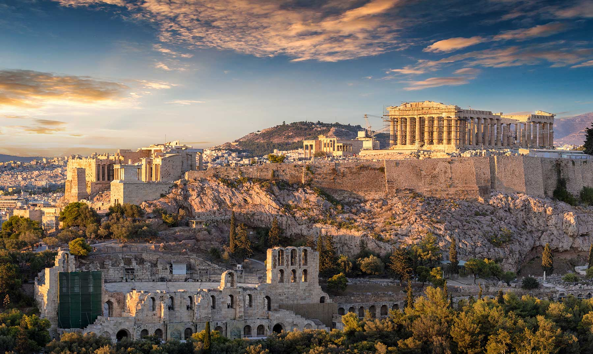

EuroTour é um site que ajuda você planejar suaviagem para Europa para , desde a compra das passagens, até a visita aos pontos turísticos mais importantes de cada região.
EuroTour(c)
Encontre as melhores ofertas em passagens aéreas para destinos em toda a Europa. Planeje sua viagem com antecedência e economize!
Oferecemos voos de diversas companhias aéreas, com opções de classe econômica e executiva para atender às suas necessidades de viagem.
Além disso, fornecemos informações sobre horários de voos, escalas e disponibilidade de assentos. Reserve suas passagens agora mesmo!
Encontre as melhores opções de hospedagem em hotéis, pousadas e mais em toda a Europa. Reserve seu lugar confortável agora mesmo!
Oferecemos uma ampla variedade de acomodações para atender a todos os orçamentos e preferências. Desde hotéis de luxo até acomodações mais econômicas, temos o lugar perfeito para você.
Além disso, fornecemos informações sobre comodidades, localização e avaliações de outros viajantes para ajudá-lo a tomar a melhor decisão de hospedagem.

Descubra os destinos mais incríveis e famosos da Europa para visitar durante a sua viagem. Explore a cultura, história e beleza da Europa.
De Paris a Roma, de Londres a Atenas, temos informações detalhadas sobre os principais pontos turísticos de cada cidade.
Conheça os monumentos históricos, museus, parques naturais e experiências culturais que a Europa tem a oferecer.
